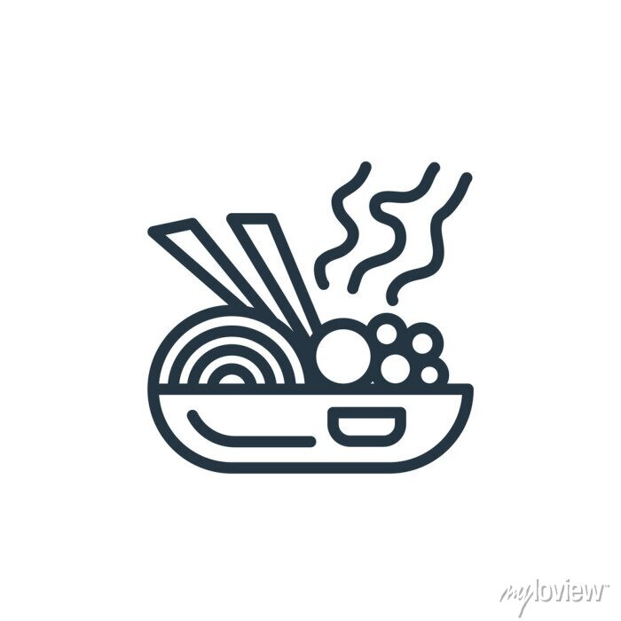

Sides
Sausages and pancakes are a delicious breakfast option on any day, but I'm not super sure why there is a spoon in this image.

Entrees
Chopsticks are a wonderful invention. They are much more efficient than forks at giving you wrist pains and premature carpul tunnel syndrome...oh also ramens pretty good.

Drinks
Ahhh, SOUP, the on kind cuisine that can be found in almost any culture. Stick a bunch of water in a pot and throw some random stuff together and you got yourself an edible dish.